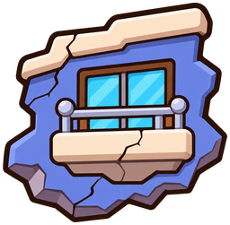
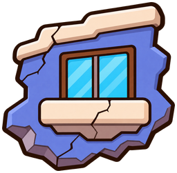
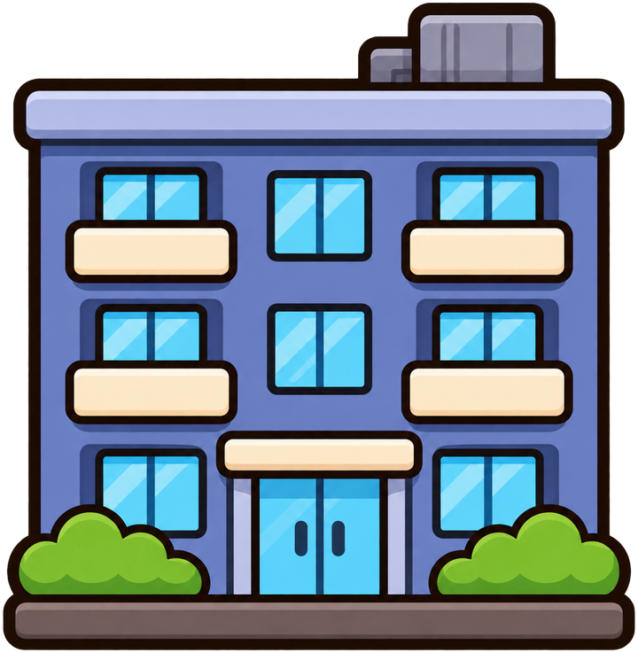
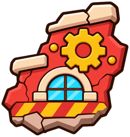
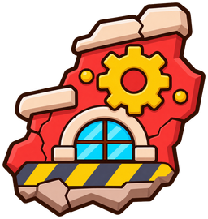
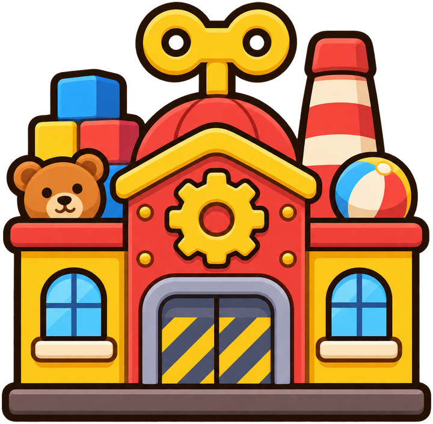

아파트
본체에 없는 은색 난간을 제거한 후보

기존
수정 후보
기준: 현재 아파트 건물같은 크기의 정지 이미지 비교야. 실제 게임의 파편 개수·움직임·표시 크기와는 다를 수 있어.
본체에 없는 은색 난간을 제거한 후보

기존
수정 후보
기준: 현재 아파트 건물빨간 줄무늬를 본체와 비슷한 짙은 회색으로 변경한 후보

기존
수정 후보
기준: 현재 공장 건물수정 후보는 다시 그리는 과정에서 균열과 윤곽도 일부 바뀌었어. 게임 반입 전 실제 폰 화면에서 확인이 필요해.